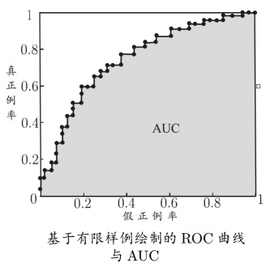

基本术语和模型评估
约 812 个字 5 张图片 预计阅读时间 3 分钟
第二章¶
基本术语和模型评估
基本术语和概念学习¶
- 1.经典的机器学习过程：

-
2.术语拓展：
-
数据：
基本术语 解释 特征 又称属性，\(\bold{x} = (x_0,x_1,\cdots,x_{n-1}), x_i\in\Sigma_i\) 属性值 特征的离散取值或连续取值 样本维度 特征的个数,即\(n\) 特征张成的空间 属性空间/特征空间/输⼊空间 标记张成的空间 标记空间/输出空间 示例/样本 一个对象的输入，示例不含标记 样例 示例+标记 -
任务： 根据标记的取值情况分为：
任务 标记情况 分类 离散值 回归 连续值 聚类 空值 监督学习 所有示例都有标记 无监督学习 所有示例都没有标记(聚类) -
目标： 泛化能力(对未来的预测能力)
-
-
3.概念学习
-
假设空间:枚举所有的假设，样本 \(\bold{x} = (x_0,\cdots,x_{n-1}) \in \bold{V}\) , \(H = \{ h | h \subset \bold{V}\}\)，也就是对 \(\bold{x}\) 所有取值的预测函数，包括 \(\empty\)。
- 版本空间：假设空间的子集，在训练集上全部运行正确,如：\(h_{色泽 = *,根蒂 = *,敲声 = 浊响}(\bold{x}),\)对于所有的样本\(\bold{x}\)都能预测正确，那么该 \(h\) 属于版本空间。
- 归纳偏好：对非测试集不同预测可能会有不同的结果。
- 没有免费午餐：一个算法 \(\xi_a\) 如果在某些问题上比另一个算法 \(\xi_b\) 好，必然存在另一些问题，\(\xi_b\) 比 \(\xi_a\) 好, 也即没有免费的午餐定理。(总误差与学习算法无关)
-
4.模型评估与选择
4.1 选择模型：经验性能\(E\)(历史表现) \(\approx\) 泛化性能\(E^*\)(未来表现得不到)
- 经验误差：也称训练误差，在训练集上的误差
- 过拟合：将样本本身特点当做一般性质学习 \(\to\) 优化目标加正则项
- 欠拟合：对样本的一般性质没有学好 \(\to\) 决策树：拓展分支，神经网络：增加训练轮数
4.2 评估方法：
方法 解释 留出法 将数据划分两个互斥集合训练和测试集，保持数据分布一致性和类别比例一致性 \(2:1 \sim 4:1\) 交叉验证法 
自助法 从 \(D\) 中随机有放回取生成 \(D'\) 调参数 对算法的参数进行设定，在验证集上确定参数。训练集：模型训练，验证集：参数调优，测试集：最终评估 4.3 性能度量： 4.3.1 "混淆矩阵":

查准率 \(P\) ：所有模型预测的正例中真正正例所占的比例。
查全率 \(R\) ：所有的正例中模型预测为正例的比例。
4.3.2 P-R曲线：

平衡点：查准率= 查全率时的取值，用来度量曲线有交叉的两个分类器的性能，如图中A，B。
4.3.3 \(F_1\) 度量:
\(F_1 = \frac{2 \times P \times R}{P + R}\)
更一般的形式 \(F_{\beta}\) ：
\(F_{\beta} = \frac{(1 + \beta^2)\times P \times R}{(\beta^2 \times P) + R}\)
\(\beta\) 作用 \(\beta = 1\) 标准\(F_1\) \(\beta > 1\) 偏重查全率(逃犯信息检索) \(\beta < 1\) 偏重查准率(商品推荐系统) 4.3.4 ROC曲线:
真正例率：\(\frac{TP}{TP + FN}\),预测正例中正例占所有正例的比例.
假正例率：\(\frac{FP}{FP + TN}\)，预测正例中徦例占所有徦例的比例.

面积大者优，也称 AUC值
AUC衡量了样本预测的排序质量
4.3.5 性能评估: